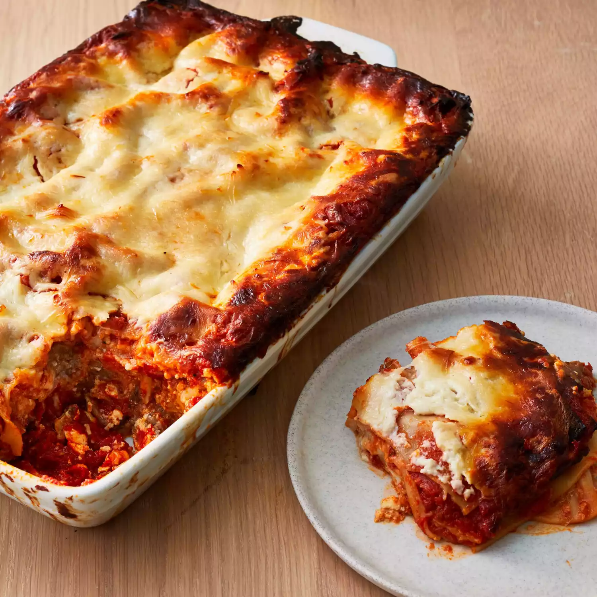

Lasagna

Description
Some recipes take a little more time to make but are so worth the effort — like lasagna. This versatile Italian dish can be labor-intensive, but the prep is worth it for the delicious final product.
(It's no wonder Garfield the cat loved them so much.) Allrecipes has hundreds of lasagna recipes to choose from, but we've rounded up our 15 best lasagna recipes of all time. Scroll through to find
recipes for artichoke spinach lasagna, creamy chicken lasagna, eggplant lasagna, and more lasagnas that you'll never get tired of.
Ingredients
- Meat: This super meaty lasagna has sweet Italian sausage and lean ground beef.
- Onion and garlic: An onion and two cloves of garlic are cooked with the meat to add tons of flavor.
- Tomato products: You'll need a can of crushed tomatoes, two cans of tomato sauce, and two cans of tomato paste.
- Sugar: Two tablespoons of white sugar add subtle sweetness and enhance the flavor of the sauce.
- Spices and seasonings: This lasagna recipe is flavored with fresh parsley, dried basil leaves, salt, Italian seasoning, fennel seeds, and black pepper.
- Lasagna noodles: Use store-bought or homemade lasagna noodles.
- Cheeses: Parmesan, mozzarella, and ricotta cheese make this lasagna extra decadent.
- Egg: An egg helps bind the ricotta so it doesn't ooze out of the lasagna when you cut into it.
How to make Lasagna step-by-step
- Make the meat sauce.
- Cook the noodles.
- Make the ricotta mixture.
- Layer the lasagna according to the recipe instructions.
- Cover with foil and bake.
- Let the lasagna rest before serving.
How to layer the lasagna
- Meat sauce
- Ricotta mixture
- Mozzarella slices
- Meat sauce
- Parmesan cheese
- Repeat the layers, then top with the remaining Parmesan.